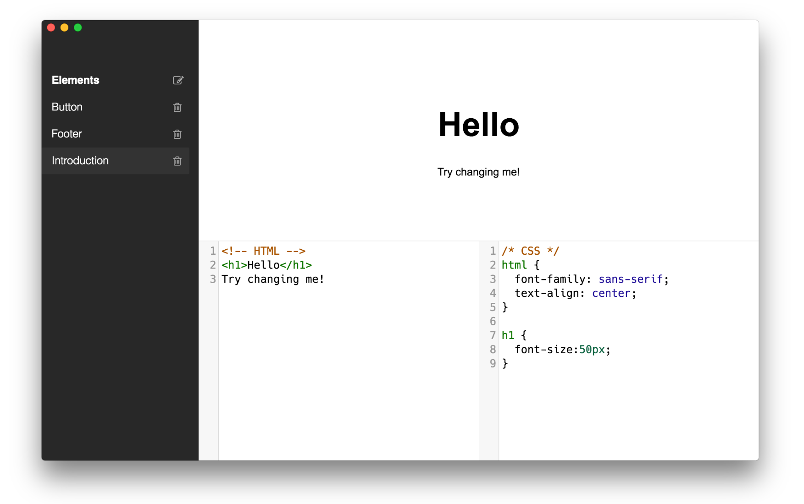
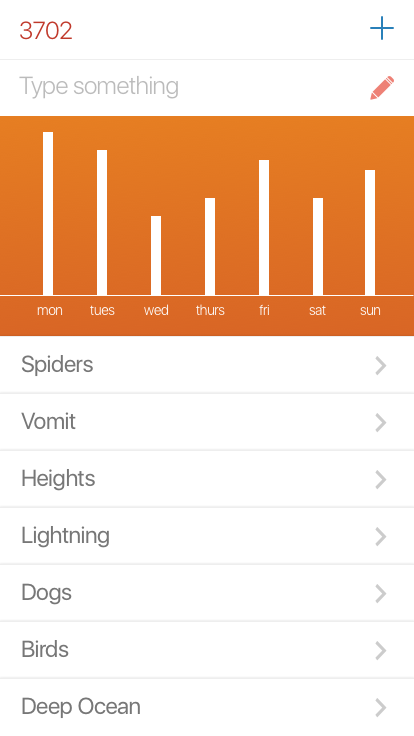
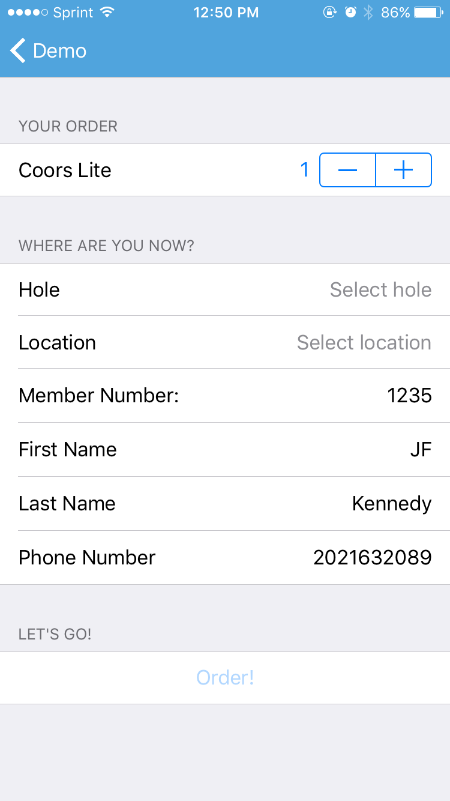
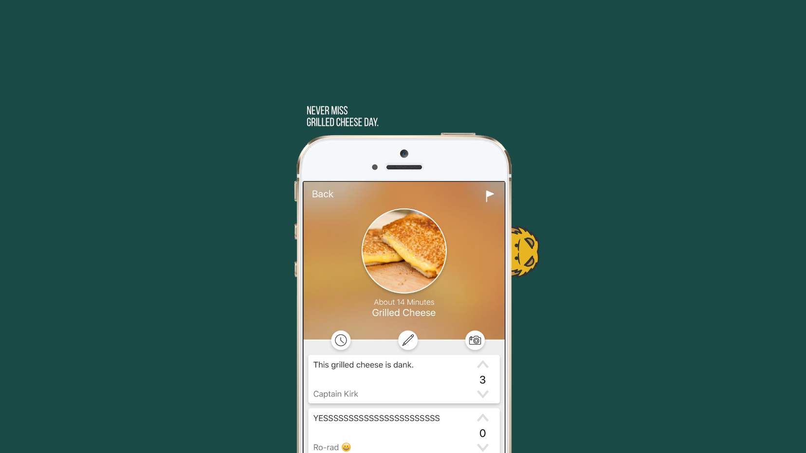

Caribu
The real-time HTML renderer on your desktop
Caribu is my current and most recent project. It's built on Electron, Github's platform for desktop application development, based on Chromium and running on Node.js. We hope that it will allow new developers a path beyond services like codecademy while still scaffolding their education by keeping away the messy alphabet soup of libraries and build services that come with real web development.
Hopefully, users will be able to experiment with their ideas inside an environment that they're already comfortable in. Since we're a cross-platform desktop application running on macOS, Windows, and Linux, we're able to provide features that other web-based services cannot, like file-saving, keyboard shortcuts, larger screen sizes, and the use of another editor. Caribu was built in a team with two other people. We take great care to avoid scalability problems that can often occur in Javascript applications. We set up strict file size conventions, require the use of ES6 modules, and encourage the use of documented utilities to avoid repeated code.
Since we use Electron, we don't need to worry that much about cross-browser support, so we're free to use the newest CSS and JS.
What's happening now
As of September 25th, 2016, we are almost done with the first version of Caribu. We only have a couple simple quality-of-life fixes to make. Our goal is to ship it as soon as possible to university students. We want to get opinions of the our core market and try to fix any issues that arise before we release it to the general public.
We're launching a Node.JS web server on AWS that will work with the Squirrel Auto-updater inside Electron. This will also be the host for our main website where users will be able to buy the application. At the time of writing, the server and its front end are nearly working, but I'm currently working on an authentication issue to allow admins to upload new versions.
Sposure
The iOS exposure therapy app
 Sposure was an app that my team and I created to help those with PTSD, phobias, and panic disorder. Although it was incredibly interesting to build, and is something we'd like to explore in the future, we eventually realized that it's core concept was flawed and wasn't incredibly functional. That wasn't before we had a solid first version running though!
The app was built on the back of Giphy. The user would tap on what they were afraid of, we would query giphy for gifs of that thing, and then we would stream gifs concatenated on to each other for as long as the user held their finger on the screen. The goal was to give the user control over what they were afraid of. It was based on the concept of flooding therapy which has been shown to be incredibly effective in many cases.
Open Source
This project is open source and available on Github!
Technical Details
We built the app in Swift, Apple's amazing new language for iOS. Like most of our iOS projects, we used Alamofire for our HTTP requests. We also used Eureka for our tableviews. In order to loop and play gifs, I forked SwiftyGif and built in the functionality.
Concurrency Model
In order to not block the main UI process while it was running the GIF animation, I set up two concurrent modules that would run network processes in the background to preload gifs before the user got to them in their queue. The first was theGiphyManager that collected
URLs from Giphy. The GiphyManager would then ship those URLs
into a queue data structure, which could be dequeued by the
ImageManager which would run on a separate concurrent queue
in the
GCD. The ImageManager could go grab the image from the URL,
compile its data into an image object then ship it into another queue data structure
that could be picked up by the main UI thread when the user gets to the
end of the gif.
It worked a bit like this.
kpTech
The golf course update
 KP Tech was a contract that we did for a local member of the Spokane community. We built two iOS applications to be used on a golf course in town. The first was an iPhone app that allowed users to order food from the kitchen in the main building. The second was an iPad app that allowed kitchen staff to see orders coming in and charge account numbers.
Technical details
We built KP Tech's app in Swift for iOS with a backend running in Phoenix, a web framework built in Elixir, the Erlang derivative with Ruby-like syntax.
Design Work
As part of the project, I also built the original version of kptech.cc. And, I built a series of logos off their Helvetica font choice. In the photo below, you can see the styles that took a "K" to the final logo.
Chow Chow
The "actual" dining hall menu
We built Chow Chow as a way to help students at Gonzaga find out what was actually at the dining hall that day. We often found the current website did not actually have accurate information. It also didn't tell you how long you would have to wait or how good the food was that day.
Users could post about meals that were available, the food quality, and the amount the had to wait.
We learned a hard lesson about how difficult it is to build a crowd-sourced application. We figured that as long as we were going in everyday and posting meals, other people would eventually do so as well. Unfortunately, it became exceedingly difficult to constantly have to have the menu updated and also report on line times and food quality for everything the dining hall was offering.
Technical Details
We built Chow Chow in Swift for iOS. We used Alamofire for our HTTP requests and a Phoenix/Elixir backend.